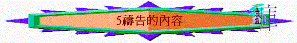

一.聖經的禱告內容
1.所羅門為聖殿的祈禱
A.求神垂顧—人向神的呼求
「神果真住在地上嗎？看哪，天和天上的天尚且不足你居住的，何況我所建的這殿呢？惟求耶和華我的神垂顧僕人的禱告祈求，俯聽僕人今日在你面前的祈禱呼籲。願你晝夜看顧這殿，就是你應許立為你名的居所；求你垂聽僕人向此處禱告的話。」王上8:27-29
∼聖所最重要的是有神垂顧，人來到聖所祈求時，若得神垂聽是莫大福氣
B.求神憐恤
「人若得罪鄰舍，有人叫他起誓，他來到這殿在你的壇前起誓，求你在天上垂聽，判斷你的僕人：定惡人有罪，照他所行的報應在他頭上；定義人有理，照他的義賞賜他。」王上8:31-32
求得
「你的民若得罪你（世上沒有不犯罪的人），你向他們發怒，將他們交給仇敵擄到仇敵之地，或遠或近，他們若在擄到之地想起罪來，回心轉意，懇求你說：『我們有罪了，我們悖逆了，我們作惡了』；他們若在擄到之地盡心盡性歸服你，又向自己的地，就是你賜給他們列祖之地和你所選擇的城，並我為你名所建造的殿禱告，」王上8:46-48
∼所羅門的祈求充滿遠景，他知道選民日後可能因犯罪而被擄，若在被擄的環逆中沒有聖殿，但人若向聖殿的呼求認真，求神垂顧
∼結果在歷史中，有一位人物名但以理，他曾在被擄地向耶路撒冷呼求神，結果神垂聽他的祈禱，使他們終被擄歸回。
2.耶穌教門徒的主禱文
「你們禱告，不可像外邦人，用許多重複話，他們以為話多了必蒙垂聽。」6:7
A.先求神的事
「所以，你們禱告要這樣說：我們在天上的父：願人都尊你的名為聖。願你的國降臨；願你的旨意行在地上，如同行在天上。」太6:9-10
∼神的名、神的國、神的旨意應放在祈禱中的第一要緊之事。
B.再求己之事
a.日用需要
「我們日用的飲食，今日賜給我們。」6:11
∼不是為明天而求，也不是求奢侈的事，乃求日用的基本需要。
b.與神關係
「免我們的債，如同我們免了人的債。」6:12
c.靈界爭戰
「不叫我們遇見試探；救我們脫離兇惡（或作：脫離惡者）。因為國度、權柄、榮耀，全是你的，直到永遠。阿們（有古卷沒有因為至阿們等字）！」6:13
3.保羅為眾教會的祈禱
A.滿心知神旨意
「因此，我們自從聽見的日子，也就為你們不住的禱告祈求，願你們在一切屬靈的智慧悟性上，滿心知道神的旨意；」西1:9
∼保羅求信徒能滿心知道神的旨意，而不是地上人意思、人的學識，而是追求天上神的旨意，祂的心意(will)。
而要知道神的心意，不是用人的哲學思想明白屬靈的事，而是用從聖靈而有的智慧與悟性(spiritual
wisdom and understanding) 不單是知識，更是要明白的。
B.講明基督奧秘
「也要為我們禱告，求神給我們開傳道的門，能以講基督的奧秘（我為此被捆鎖），」西4:3
C.叫信徒不犯罪
「我們求神，叫你們一件惡事都不作；這不是要顯明我們是蒙悅納的，是要你們行事端正，任憑人看我們是被棄絕的吧！」林後13:7
D.愛心知識增長
「我所禱告的，就是要你們的愛心在知識和各樣見識上多而又多，」腓1:9
E.主的道快傳開
「弟兄們，我還有話說：請你們為我們禱告，好叫主的道理快快行開，得著榮耀，正如在你們中間一樣。」帖後3:1
F.聖徒能顯榮耀
「因此，我們常為你們禱告，願我們的神看你們配得過所蒙的召，又用大能成就你們一切所羨慕的良善和一切因信心所做的工夫；叫我們主耶穌的名在你們身上得榮耀，你們也在他身上得榮耀，都照著我們的神並主耶穌基督的恩。」帖後1:11-12
G.信徒得力剛強
「因此，我在父面前屈膝，（天上地上的各（或作：全）家，都是從他得名）求他按著他豐盛的榮耀，藉著他的靈，叫你們心裡的力量剛強起來，」弗3:14-16
4.耶穌在世禱告的內容
A.求門徒不失信心
「但我已經為你祈求，叫你不至於失了信心，你回頭以後，要堅固你的弟兄。」」路22:32
B.求門徒脫離惡者
「我不求你叫他們離開世界，只求你保守他們脫離那惡者（或作：脫離罪惡）。」約17:15
C.求門徒合而為一
「從今以後，我不在世上，他們卻在世上；我往你那裡去。聖父啊，求你因你所賜給我的名保守他們，叫他們合而為一像我們一樣。」約17:11
D.求自己能榮耀神
「耶穌說了這話，就舉目望天，說：「父啊，時候到了，願你榮耀你的兒子，使兒子也榮耀你；」約17:1
E.求神旨意能成就
「他就稍往前走，俯伏在地，禱告說：「我父啊，倘若可行，求你叫這杯離開我。然而，不要照我的意思，只要照你的意思。」」太26:39
二.一些經典的禱文
1求和平的禱告 --- 聖法蘭西斯--禱文
主啊! 使我作您和平之子
在憎恨之處播下您的愛
在傷痕之處播下您寬恕
在懷疑之處播下信心
在絕望之處播下您的盼望
在幽暗之處播下您的光明
在憂愁之處播下您的歡愉
在赦免時我們便蒙赦免
在捨去時我們便有所得
迎接死亡時 我們便進入永生
主啊 使我少為自己求
少求受安慰 但求安慰人
少求被瞭解 但求瞭解人
少求愛 但求全心付出愛
2願神的旨意成就的禱告
--- 潘錫(1800 - 1882)
神阿！我決意在今天竭力得蒙您的悅納，
在您所囑託我的事上都遵行您的旨意。
凡您所許可臨到我的事，
雖與我的願望不同，仍以溫和謙卑及忍耐的心承受。
求您使我能勝過自我的意旨，讓您的旨意成為我的旨意。
我應作的，請幫助我作成；
使我單純得像一個幼童，整天在慈父面前一直仰望著您。
求您的愛激勵我，使我愛您。
我願不單只在言語上感謝您，更在內心中感受您愛的恩典，感激您日日賜我每一樣安慰。
3求智慧的禱告
--- 戴祿(1613-1667)
全能的神，萬物之主，
您曾將一切事物與所有機會彰顯您的恩慈，
將兇惡化為良善。
我極謙卑地懇求您賜給我上頭來的智慧，
使我可以敬仰您，羨慕您的道路與腳蹤，
尤其當我在深海裡不易尋索時。
求您教導我在凡事上順服您的安排，
在人事與環境的變遷中仍能知足，
4為家人的禱告
--- 麥克亞瑟為子祈禱文
主啊！求使我的兒子
堅強到一個地步以致能知道自己的軟弱，
勇敢到一個地步以致在恐懼中能面對自己。
使他成為一個敗不餒、勝不驕的人。
求使我的兒子
不作一個只有幻想而無行動的人，
使他認識同時也知道認識自己是知識的基石。
我懇求，不要讓他走上安逸舒適的路，
而是要接受重壓、苦難與挑戰。
讓他學習在風暴中站起身來，
讓他學習對於失敗的人有切身的同情。
主求使我的兒子心地明朗，目標遠大，
使他在指揮別人之前先會駕馭自己，
使他成為一個遠瞻未來但不忘記過去的人。
如果他能作到這一切，主啊！我還要求，
賜給他足夠的幽默感，使他在嚴肅中不為已甚；
賜給他謙卑的心，使他時刻緊記偉大不一定要轟轟烈烈，
智慧必須加上開明，以及勇力必須帶有謙和。
如此，為父的我，才敢輕聲地說：「我沒有虛渡此生。」